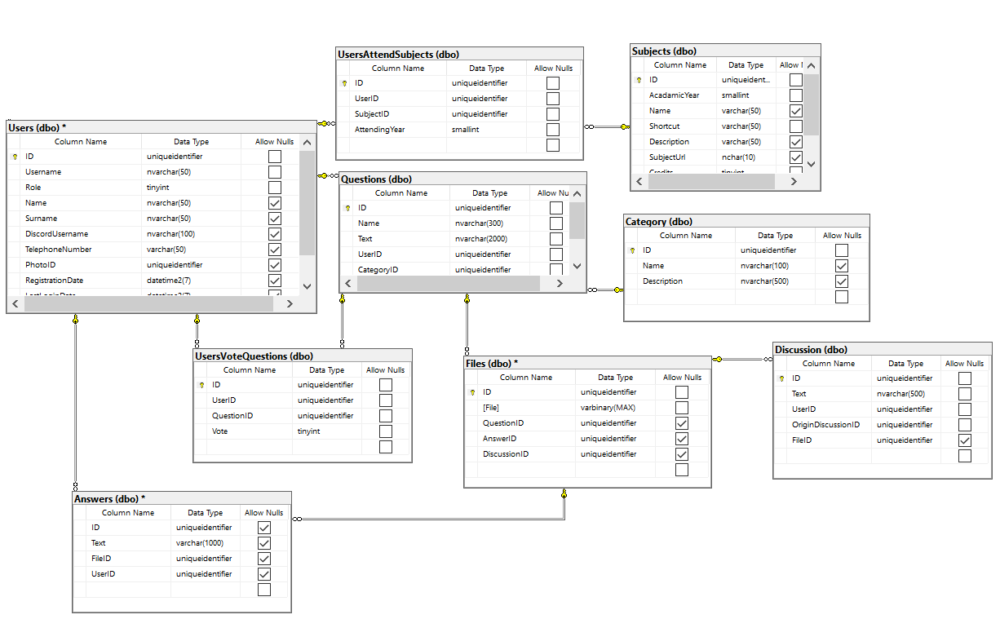

Fitu¹ka-v2: sdílení a øe¹ení testových otázek studenty
- Autoøi
-
Tomá¹ Milostný
xmilos02@stud.fit.vutbr.cz -
Front-end, správa u¾ivatelù, modely, mapování
-
Michal Rivola
xrivol01@stud.fit.vutbr.cz -
Kontrolery, repozitáøe, testy
- URL aplikace
- http://www.stud.fit.vutbr.cz/~xmilos02/IIS
- http://www.stud.fit.vutbr.cz/~xrivol01/IIS
- Na tìchto URL bude odkaz na stránky.
- https://icy-flower-0d67f0203.azurestaticapps.net
U¾ivatelé systému pro testování
| Login | Heslo | Role |
|---|
| administrator | Password1! | Administrátor |
| moderator | Password1 | Moderátor |
| franta | franta1 | Student |
Implementace
Projekt je implementován pomocí technologií Blazor WebAssembly a ASP.NET Web API ve frameworku .NET 6
Rozdìlení projektù:
- Fituska.API: Webové API, obsahuje kontrolery, zpøístupòuje rozhraní pro klientskou aplikaci.
- Fituska.BL: Bussiness logika aplikace, repozitáøe pro pøístup k databázi, mapování entit databáze na modely
- Fituska.DAL: Data access layer, obsahuje databázový kontext pro definici práce s entitami databáze.
- Fituska.Client: Klientská aplikace Blazor WebAssembly komunikuje s webovým API pomocí HTTP.
- Fituska.Shared: Prostøedky sdílené mezi klientskou a serverovou èástí projektu, datové modely, staticky definované prvky.
Databáze
Návrh ER diagramu databáze pøed implementací. Skuteèná databáze je vytvoøena pomocí ORM Entity Framework Core 6 stylem Code First.

Instalace
- postup instalace na server:
- Publikováno na Microsoft Azure, nasazení pomocí Continuous Deployment na github.com.
- softwarové po¾adavky:
- SDK: .NET 6.0.100
- Runtime: Microsoft.AspNetCore.App 6.0.0, Microsoft.NETCore.App 6.0.0
- Visual Studio 2022
- jak rozbalit, konfigurovat, inicializovat databázi:
- Extrahovat archiv.
- Otevøít soubor Fituska/Fituska.sln ve Visual Studio.
- Pravým tlaèítkem kliknout na Solution v sekci Solution Explorer, vybrat Set Startup Projects...
- Vybrat Multiple Projects a nastavit Start pro projekty Fituska.API a Fituska.Client
- V re¾imu Debug dojde ke spu¹tìní s lokální Sqlite databází, pro Release na Microsoft Azure je pou¾ita Azure SQL Server.
Známé problémy
Zde popi¹te, které body zadání nejsou implementovány a z jakého dùvodu. Napø. „Z èasových dùvodù nebyla implementována správa u¾ivatelù.” Pomù¾ete tím zrychlit hodnocení, kdy¾ neimplementované funkce nebudeme muset dlouze hledat.